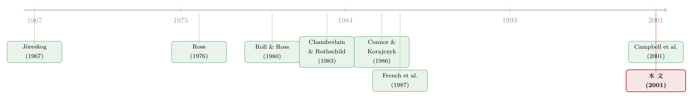

8.2% 还是 57.3%？——同一个市场，两把尺子量出两种因子
本文读的是 Jones (2001, Journal of Financial Economics)：把因子模型残差里那条「波动会随时间起伏」的事实正视起来，提出异方差因子分析 (heteroskedastic factor analysis, HFA)。在 1989–1993 这段样本里，沿用 Connor–Korajczyk 经典方法抽出的单因子只能解释 CRSP 市值加权指数 8.2% 的变动，而允许异方差之后抽出的因子能解释 57.3%——同一批数据，换一把尺子，因子的「质量」天差地别。
1 一个让人不安的数字
先抛一个让人不太舒服的事实。
8.2%。这是用业内最流行的因子抽取方法——Connor 和 Korajczyk (1986) 的渐近主成分 (asymptotic principal components)——在 1989 到 1993 年间，从几千只股票里抽出来的那个「第一因子」，对 CRSP 市值加权指数的解释力。
一个因子模型的第一因子，理应是最接近「市场」的那个东西。它本该和大盘指数高度同向才对。可 8.2% 是什么概念？意味着这个被精心抽出来的「最大因子」，和真实的市场几乎是各走各路的。
如果你是一个相信因子模型的实证资产定价研究者，看到这个数字应该会后背发凉：我们用了二十年、写进无数论文、拿去检验套利定价理论 (arbitrage pricing theory, APT) 的那套方法，在最近十年的数据里，抽出来的可能根本不是真正的因子。
那么问题来了——是因子模型本身错了，还是我们抽因子的手法错了？
这篇 2001 年发在 JFE 上的论文给出的答案干脆利落：手法错了。而且错在一个被所有人默认、却早被数据反复否决的假设上——同方差 (homoskedasticity)。把这个假设松开一点点，那个 8.2% 立刻变成 57.3%。
2 故事要从 CK 的那个「漂亮结果」说起
要讲清楚问题出在哪，得先回到 Connor 和 Korajczyk（下称 CK）当年那个堪称漂亮的结果。
APT 的魅力在于它的「少」：Ross (1976) 只需要三条假设——资产足够多、交易无成本、收益由一个因子模型驱动——就能推出近似的因子定价关系。可一旦要拿去做实证，麻烦就来了：APT 对「因子到底是什么」三缄其口。你要么像 Chen, Roll and Ross (1986) 那样预先指定一组宏观因子，但那样一来检验的就是「市场有效」和「这组因子选得对不对」的联合假设；要么，你得想办法把因子从收益数据里直接抽出来。
早期的做法是极大似然因子分析，但它要求收益正态、残差协方差矩阵对角，限制太死。CK 的贡献正是绕开了这些。他们的核心洞见是：当资产数 \(n\) 趋于无穷时，因子的实现值可以被任意精度地恢复出来。
我们跟着 CK 把模型写下来。对前 \(n\) 只资产，
$$ r^n_t = B^n h_t + e^n_t, $$
其中 \(r^n_t\) 是 \(t\) 期 \(n\times 1\) 的超额收益向量，\(B^n\) 是 \(n\times K\) 的因子载荷（beta）矩阵，\(h_t\) 是 \(K\times 1\) 的因子实现值，\(e^n_t\) 是序列不相关的特质残差。把 \(T\) 期堆成矩阵：
$$ R^n = B^n H + E^n. $$
CK 的全部技巧，藏在分析这个 \(T\times T\) 的叉积矩阵 (cross-product matrix) \(\tfrac{1}{n}R^{n\prime}R^n\) 的极限行为上。把它展开：
$$ \frac{1}{n}R^{n\prime}R^n = \frac{1}{n}H'B^{n\prime}B^nH + \frac{1}{n}H'B^{n\prime}E^n + \frac{1}{n}E^{n\prime}B^nH + \frac{1}{n}E^{n\prime}E^n \equiv X^n + Y^n + Y^{n\prime} + Z^n. $$
接着，一个个看这四项在 \(n\to\infty\) 时去了哪里：
- \(X^n\)：假设 \(\tfrac{1}{n}B^{n\prime}B^n\) 有概率极限 \(M\)（且满秩），则 \(X^n \to H'MH\)。为了记号干净，定义 \(F \equiv M^{1/2}H\)，于是 \(X^n \to F'F\)。这里 \(F\) 就是「旋转后的因子」——因子和 beta 本来就只能定到一个旋转，所以把估计对象从 \(H\) 换成 \(F\) 不损失任何东西。
- \(Y^n\) 和 \(Y^{n\prime}\)：因为残差均值为零、且与因子独立，大数定律让这两项的概率极限都是 0。
- \(Z^n = \tfrac{1}{n}E^{n\prime}E^n\)：这是关键。残差不序列相关，所以非对角元的极限是零；而第 \(t\) 个对角元 \(\tfrac{1}{n}e^{n\prime}_t e^n_t\)，收敛到 \(t\) 期的平均特质方差。
于是问题全压到了 \(Z^n\) 的对角线上。CK 在这里加了一条假设（他们的假设 10）：存在一个平均残差方差，并且它不随时间变化。记这个常数为 \(\bar d\)，那么 \(Z^n \to \bar d I\)，整个叉积矩阵就收敛到
$$ \frac{1}{n}R^{n\prime}R^n \;\longrightarrow\; F'F + \bar d I. $$
漂亮就漂亮在这里：\(\bar d I\) 只是在每个特征值上平移了一个常数 \(\bar d\)，并不改变特征向量。所以直接对 \(\tfrac{1}{n}R^{n\prime}R^n\) 做主成分（取前 \(K\) 个特征向量），就能恢复 \(F\)。这就是「渐近主成分」这个名字的由来。
3 但真正关键的一步，是那个被默认的「常数」
到这里，一切都很美。可你有没有注意到，整座大厦其实压在一根细柱子上——「平均残差方差 \(\bar d\) 不随时间变化」。
这个假设有道理吗？
只要稍微想一想就知道悬。French, Schwert and Stambaugh (1987) 早就发现，市场波动率会大幅、持续地偏离它的长期均值；Schwert (1990) 更指出短期波动的跳动可以更剧烈。这些说的是总体波动。那特质波动呢？Schwert and Seguin (1990) 发现规模组合的波动有独立于大盘的成分；而真正一锤定音的是 Campbell, Lettau, Malkiel and Xu (2001)——他们做了一个公司层面的分解，发现个股波动有市场、行业、特质三个成分，三者都随时间剧烈变动，而且各公司的特质波动动态是相关的。
最后这一点是致命的。如果各公司的特质波动独立地起伏，那么在一个大样本里平均一下，\(\bar d\) 仍然会稳如常数——CK 的假设依然成立。可一旦特质波动有共同成分（正如 Campbell 等人实证发现的），平均特质方差就会从这个月到下个月发生可观的变化。\(\bar d\) 不再是常数。
（关于「波动为什么会扎堆起伏」这件事本身的微观来源，可参见《GARCH 从哪儿来？——把「波动会扎堆」这件事，还给投资者的情绪》。）
这篇论文做的事，本质上就是把这根细柱子换成一根更结实的。作者的修正「微小却关键」：仍然要求每一期都存在一个平均特质方差，但允许它逐期自由变动。形式化地，
$$ d_t = \operatorname*{plim}_{n\to\infty}\frac{1}{n}\sum_{i=1}^{n}\Sigma^n_t(i,i), $$
于是 \(Z^n\) 的极限不再是 \(\bar d I\)，而是一个对角元各不相同的对角矩阵 \(D\)，其中 \(D(t,t)=d_t\)。叉积矩阵的极限随之变成：
CK 是 \(F'F + \bar d I\)，本文是 \(F'F + D\)。唯一的区别，就是那个常数 \(\bar d\) 被放成了一条会随时间起伏的序列 \(d_t\)。
注意这里的精妙之处：作者没有引入任何 CK 之外的新假设。残差依然序列不相关、依然与因子独立。他只是把一条「过强」的假设（方差恒定）替换成了一条「更弱、更现实」的假设（每期方差存在）。所以 HFA 不是另起炉灶，而是 CK 的一个真子集般的推广。
4 代价：主成分不灵了，但 Jöreskog 早备好了药
松开假设是要付代价的。
\(F'F + \bar d I\) 之所以能直接做主成分，是因为 \(\bar d I\) 不动特征向量。可换成 \(F'F + D\) 之后，\(D\) 在对角线上七高八低，它会扭曲特征向量——你再去取前 \(K\) 个主成分，抽出来的就不是干净的 \(F\) 了。这正是 CK 方法在高异方差期间「翻车」的数学根源。
那怎么办？反转出现在一个意想不到的地方：这个 \(F'F + D\) 的形式，和心理统计学里 Jöreskog (1967) 的极大似然因子分析所面对的协方差矩阵 \(B'B + \Omega\) 形式完全一样（\(\Omega\) 是对角残差协方差）。Jöreskog 早在 1967 年就给出了把这种「低秩 + 对角」结构拆开的迭代算法。作者直接把它借过来抽 \(F\)：
- 计算叉积矩阵 \(C=\tfrac{1}{n}R^{n\prime}R^n\)；
- 给对角矩阵 \(D\) 一个初始猜测 \(\hat D\)（文中取 \(C\) 对角线的 0.5 倍，即假设一半方差来自特质成分）；
- 取 \(\hat D^{-1/2} C \hat D^{-1/2}\) 的前 \(K\) 个最大特征值（构成对角阵 \(L\)）及对应特征向量（构成 \(V\)）；
- 算出因子估计 \(\hat F^{*} = \hat D^{1/2}V(L-I)^{1/2}\)；
- 更新 \(\hat D = \operatorname{diag}(C - \hat F^{*\prime}\hat F^{*})\)；
- 回到第 3 步迭代，直到收敛。
直觉上，这套迭代在做一件事：反复地把「信号」（低秩的 \(F'F\)）和「逐期噪声」（对角的 \(D\)）剥离开——第 3 步先用当前的噪声估计 \(\hat D\) 给数据「去异方差化」（那个 \(\hat D^{-1/2}\,\cdot\,\hat D^{-1/2}\) 的夹心），再抽因子；第 5 步又用抽出的因子反过来更新噪声。CK 相当于这套迭代在「\(D\) 被强行钉死成 \(\bar d I\)」时的一步特例。
最后，为了能和 CK 因子（天然是正交集）做比较，作者把抽出的 \(\hat F^{*}\) 通过逐列回归正交化成一个满足 \(\hat F'\hat F = I\) 的正交集。
5 数据与那个 57.3%
说了半天理论，得让数据说话。
数据：CRSP 月度股票文件，覆盖 NYSE、Amex、Nasdaq。沿用 CK (1988) 的做法，作者切成四个五年窗口——1979–1983、1984–1988、1989–1993、1994–1998——外加一个合并的 20 年样本。用五年窗口有三重考虑：不同时期波动 regime 差异大，可作稳健性；五年够短，beta 近似常数；也能减轻只保留「全程存活」公司带来的生存偏差。各窗口的公司数从 3340（79–83）到 4792（94–98）不等；要求 20 年全程无缺失则只剩 1281 家，若放开缺失则暴增到逾 19,000 家。
异方差到底有多严重？ 作者用算法输出的 \(d_t\) 序列，计算 \(\sqrt{d_t}\) 的标准差作为异方差的度量。结果很说明问题：在 \(K=1\) 时，这个标准差在 1979–1983 是 1.88、1984–1988 是 1.90，到 1989–1993 猛跳到 5.20，1994–1998 回落到 2.66。也就是说，1989–1993 这段的残差异方差比八十年代初高了约 2.5 倍。而且 \(\sqrt{d_t}\) 的自相关在 0.21 到 0.5 之间，在零自相关的原假设下渐近标准误至多 0.13，多数自相关在 5% 水平上显著——波动确实是持续的。有意思的是，异方差最低的恰恰是那个「精挑细选、全程存活」的 20 年样本，而一旦把带缺失的小公司放进来异方差又变大，这暗示平均残差方差的变动，主要来自样本中新公司的进进出出（与 Safdar, 2000 一致）。
于是，那个核心对照出现了：恰恰在异方差最猖獗的 1989–1993，CK 抽出的单因子只能解释 CRSP 市值加权指数 8.2% 的变动，而 HFA 抽出的因子解释了 57.3%。这不是边际改进，这是「抽错了」和「抽对了」的区别。直觉很清楚：1987 年崩盘、1990 年前后那些波动剧烈的月份，残差方差暴涨，CK 把这些高方差月份的「噪声」误当成了「因子信号」，于是它的「第一因子」很大程度上是在追逐少数几个动荡月份的特质噪声，而非真正的市场共动；HFA 先把每期噪声的尺度估出来、除掉，剩下的才是干净的共同因子。
这个发现还有一个直接推论：APT 检验的结论会随抽因子的方法而摇摆——作者报告 APT 检验的 p 值有时强烈依赖于用 CK 还是 HFA。换句话说，过去某些「APT 被拒绝/不被拒绝」的结论，可能只是抽因子手法的副产品。
6 文献脉络
把这条线索捋一捋，会看到一段相当清晰的演进。
最上游是两条并行的河。一条是资产定价理论：Ross (1976) 提出 APT，Roll and Ross (1980) 第一次拿真实数据去检验它；Chamberlain and Rothschild (1983) 把「近似因子结构」的数学讲透，为「用大样本恢复因子」铺了路。另一条是统计方法：Jöreskog (1967) 在心理统计学里发明了处理「低秩 + 对角」协方差的极大似然因子分析迭代算法——这把工具在三十多年后会被原封不动地借进金融。
两条河在 Connor and Korajczyk (1986) 这里汇合：他们用渐近主成分把「无须预先指定因子、直接从收益里抽因子」变成了可操作的标准流程，并在 1988 年用它检验 APT。此后这套方法成了实证资产定价的「默认选项」。

可与此同时，波动率研究这条暗线一直在积累反证：French, Schwert and Stambaugh (1987)、Schwert (1990) 记录了总体波动的剧烈时变，Schwert and Seguin (1990) 触及了组合层面的特质波动，直到 Campbell, Lettau, Malkiel and Xu (2001) 证明个股特质波动有一个共同的、时变的成分——这恰好戳中了 CK 假设的软肋。Jones (2001) 正站在这个交叉点上：它既是 CK 框架的直接推广，又是「波动率时变」这一大量实证证据对因子抽取方法的一次清算。（顺带一提，作者在致谢里坦承，论文初稿写成一年后才得知 Louis Scott 一篇 1988 年的未刊工作含有部分等价结果——这种「英雄所见略同」在方法论文里并不罕见。）
7 评论与延伸（Q&A + 研究方向）
(a) 几个可能的疑问
Q：HFA 不就是「加权主成分」吗，有什么新鲜的？
思路上确有相通：HFA 的迭代第 3 步本质是用 \(\hat D^{-1/2}\) 对数据做逐期加权（给高方差月份降权）再抽主成分。但关键在于权重 \(D\) 不是外生给定的，而是和因子一起被联合、迭代地估出来的；CK 则相当于把权重强行钉成单位阵。所以与其说是「加了个权」，不如说是「把 CK 钉死的那个常数解放成了一条内生序列」。
Q：为什么松开假设反而需要更复杂的 Jöreskog 算法，而不是继续做主成分？
因为 \(\bar d I\) 不改变特征向量，主成分才恰好能恢复 \(F\)；可一旦变成对角元参差不齐的 \(D\)，它会扭曲特征向量，主成分抽出来的就不是 \(F\) 了。\(F'F + D\) 这种「低秩 + 一般对角」结构没有闭式特征分解，只能靠迭代——而这正是 Jöreskog (1967) 解决的问题。
Q：8.2% vs 57.3% 会不会只是某段特殊样本的偶然？
作者特意切了四个五年窗口正是为了防这一点。改进幅度和异方差程度高度同步：异方差最凶的 1989–1993（\(\sqrt{d_t}\) 标准差 5.20）改进最大，而异方差温和的早期窗口两种方法差距就小得多。这种「剂量—反应」关系比单一数字更有说服力。
Q：这是不是说过去用 CK 做的 APT 检验全都不可信了？
没这么绝对。作者的措辞是 APT 检验的 p 值「有时」强烈依赖抽取方法——在同方差温和的样本里两者结论可能一致。但它确实意味着：凡是落在高异方差区间的检验结论，都需要用 HFA 重新核对一遍，否则你不知道拒绝/不拒绝是经济现象还是方法 artifact。
Q：把带缺失观测的小公司放进来，到底是帮忙还是添乱？
两面性。理论上更大的样本能降低 \((R^{m\prime}R^m)\oslash(I^{m\prime}I^m)\) 的估计方差；但小公司收益往往高度波动，反而可能抬高估计量方差。更微妙的是，中途增删公司本身就会让平均特质方差产生时变（Safdar, 2000）——也就是说，正是「样本构成在变」制造了一部分异方差。所以维持固定样本会低估异方差的相关性，作者也因此提醒：他的大部分结果用的是无缺失样本，可能反而低报了 HFA 的重要性。
Q：HFA 会不会在某些情况下反而把 D 估出负数、把模型估崩？
这是 Jöreskog 类算法的已知风险（Knez et al., 1994 讨论过 \(\hat D\) 出现负元素的可能）。作者明确报告：在本文的所有应用中这个问题都没有出现。但这说明 HFA 不是无条件稳健的，在样本更短、\(n\) 相对 \(T\) 更大时需要小心。
(b) 几个可能的研究问题与提案
1. 把 HFA 搬到公司债因子抽取上。 【经济故事】公司债残差的异方差比股票更凶——信用利差在危机期（2008、2020 三月）会整体性放大，平均特质方差的时变极其剧烈。若 CK 式主成分在股票里都会被高波动月份带偏，在债券里只会更严重，那么「公司债到底有几个因子、第一因子是不是流动性」这类争论可能部分是抽取方法的产物。 【可行性】中。数据用 TRACE 成交 + Mergent FISD，单位是「债券—月」。难点在债券缺失观测远比股票普遍，正好要用到本文 §2.2 的缺失值版本 \((R^{m}{}'R^{m})\oslash(I^{m}{}'I^{m})\)；识别上可对照 HFA 与 CK 抽出的因子对已知信用因子（DEF、TERM）的解释力。（与公司债因子的脆弱性相关，可参见《一篇被作者亲手撤回的 JFE：当「公司债四因子」死于一次时间对齐错误》。）
2. 用「样本构成变动」直接驱动 \(d_t\) 的时变，做一次分解。 【经济故事】作者已指出平均特质方差的时变主要来自新公司进出（Nasdaq 扩张那段）。能不能把 \(d_t\) 的方差正交分解成「固定样本内的真实波动时变」与「样本构成变动」两块？这关系到一个更深的问题：我们观察到的「特质波动上升」（Campbell et al., 2001）有多少是真的、多少是上市公司池子在换血。 【可行性】高。CRSP 全样本可得，只需在每个时点固定 vs 放开样本两套口径分别跑 HFA，比较 \(\sqrt{d_t}\) 序列即可，识别干净、几乎无需额外假设。
3. 外资持有人冲击下的特质波动共动。 【经济故事】当一国突然对外资开放某批股票（可投资度提升），这批股票的特质波动是否出现新的共同成分？若是，则 CK 式抽取在开放事件窗口会失效，而 HFA 能更干净地分离「外资带来的共同因子」与「噪声」。 【可行性】中。数据用 emerging market 的 investability 指数 + 个股月度收益，识别靠开放事件的交错时点。难点是新兴市场缺失观测和停牌多，需谨慎处理。（与外资和可投资度对波动的影响相关，可参见《外资能买的股票，为什么更「抖」？——把「可投资度」拆到每一只个股》。）
4. 异方差稳健抽取 vs 现代收缩方法的擂台赛。 【经济故事】今天处理「因子动物园」的主流是收缩（shrinkage）和惩罚回归，但它们多在横截面上做文章；HFA 处理的是时间序列异方差。两条路径解决的是不同方向的噪声，合在一起会不会更好？ 【可行性】高。纯方法论 + 模拟 + CRSP 实证即可，识别不成问题；难点是把两类方法在统一的样本外评价框架下公平比较。（关于横截面收缩，可参见《压缩横截面：因子动物园的尽头，不是更少的因子，而是更聪明的收缩》。）
8 我的判断
贡献。这篇论文的价值不在数学难度——它几乎没引入任何新假设，只是把一条「过强」的假设松成「更现实」的，再借来一套现成的 1967 年的算法。它的份量全在那个对照：8.2% vs 57.3%。一个看似无害的「方差恒定」假设，在最近十年的数据里，足以让一个标准方法抽出近乎无意义的因子。这种「用一个无可辩驳的实证事实，去推翻一个被默认了二十年的便利假设」的论文，是方法论文里最有杀伤力的一类。
对识别的担忧。我有两点保留。其一，整套结果建立在「残差序列不相关」这条 CK 假设上——HFA 松开的只是异方差，没碰序列相关。可如果残差既异方差又有微弱序列相关（高频或微观结构噪声里很常见），\(Z^n\) 的非对角元就未必趋零，两种方法可能都有偏。其二，所谓「真因子」在模拟里是用从真实数据 bootstrap 出来的因子估计扮演的——这本身依赖于某种抽取方法，存在一点循环论证的味道；HFA 在「以 HFA 抽出的因子为真值」的 DGP 下表现更好，多少是题中应有之义。真正的检验还得看外生的、与抽取方法无关的基准（比如对宏观变量、对指数的解释力），而作者用 CRSP 指数做的那个对照恰恰是这类外生检验里最有说服力的一个。
后续想看到什么。我最想看的是把这把尺子系统性地重打一遍历史账：那些在 1987–1993 高波动区间用 CK 做出的 APT 检验、因子个数判定、组合业绩归因，换成 HFA 之后有多少结论会翻盘？如果翻盘的比例不小，那么这篇论文的意义就远不止「提出一个更好的估计量」，而是对一整段实证资产定价文献的体检报告。可惜二十多年过去，HFA 的引用远不及 CK——也许正因为它「太朴素」，朴素到大家以为不重要。但 8.2% 到 57.3% 这个跳跃提醒我们：有时最该警惕的，恰恰是那个你从不去检验的「常数」。
参考文献
Campbell, J., Lettau, M., Malkiel, B., Xu, Y. (2001). Have individual stocks become more volatile? An empirical exploration of idiosyncratic risk. Journal of Finance 56(1), 1–43.
Chamberlain, G., Rothschild, M. (1983). Arbitrage, factor structure, and mean-variance analysis of large asset markets. Econometrica 51(5), 1281–1304.
Chen, N., Roll, R., Ross, S. (1986). Economic forces and the stock market. Journal of Business 59(3), 383–403.
Connor, G., Korajczyk, R. (1986). Performance measurement with the arbitrage pricing theory. Journal of Financial Economics 15(3), 373–394.
Connor, G., Korajczyk, R. (1988). Risk and return in an equilibrium APT: application of a new test methodology. Journal of Financial Economics 21(2), 255–289.
French, K., Schwert, G., Stambaugh, R. (1987). Expected stock returns and volatility. Journal of Financial Economics 19(1), 3–29.
Jones, C. S. (2001). Extracting factors from heteroskedastic asset returns. Journal of Financial Economics 62(2), 293–325.
Jöreskog, K. (1967). Some contributions to maximum likelihood factor analysis. Psychometrika 32(4), 443–482.
Knez, P., Litterman, R., Scheinkman, J. (1994). Explorations into factors explaining money market returns. Journal of Finance 49(5), 1861–1882.
Roll, R., Ross, S. (1980). An empirical investigation of the arbitrage pricing theory. Journal of Finance 35(5), 1073–1103.
Ross, S. (1976). An arbitrage theory of capital asset pricing. Journal of Economic Theory 13(3), 341–360.
Schwert, G. (1990). Stock volatility and the crash of '87. Review of Financial Studies 3(1), 77–102.
Schwert, G., Seguin, P. (1990). Heteroskedasticity in stock returns. Journal of Finance 45(4), 1129–1155.